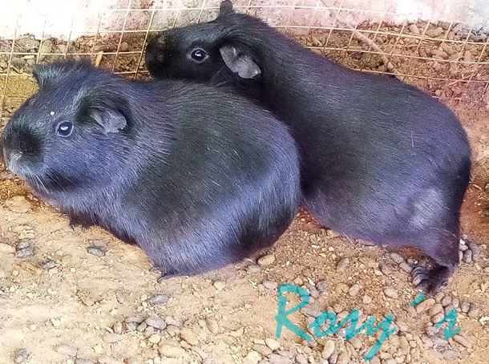

Apoyenos a lograr nuestras metas comprando productos de calidad
Se creo el negocio con la finalidad aumentar los ingresos con la crianza y venta de cuyes. Nuestro negocio pasó por una serie de transiciones para llegar hasta este punto, el cual es ofrecer cuyes a un público más grande como son, restaurantes o grandes entidades que tambíén que también estan en el rubro para entablar relaciones comerciales. Sin descuidar claro a los clientes minoristas que también buscan cuyes. Lograremos nuestro objetivo con su apoyo que consiste en compartir esta página web con sus demás contactos; para seguir hacer creciendo este negocio que nació hace más 15 años que empezó con un par de cuyes, y que ahora busca dar un paso más en este emocionante rubro el cual es criar y vender cuyes.
Formar un negocio referente de calidad, que realice exportaciones a otras ciudades o provincias del Perú. Además de ser reconocida por restaurantes, clientes y demás empresas. Por el buen y consciente trabajo que estamos realizando. Nuestros valores éticos consisten en no alimentar o inyectar a los cuyes con sustancias químicas que aceleren el crecimiento y otros efectos que ponga en peligro la vida del roedor y el consumidor. Pues si bien es cierto la mayoria de ventas de los cuyes es para el consumo. Se plantea a futuro convertir este a negocio en empresa dedicada integralmente a la venta, compra y crianza de cuyes; llegando a ofrecer también medicamentos para algunas enfermedades puedan contraer. En general todo para el buen desarrollo de un cuy bajo cualquier circunstancia.
(c) Todos los derechos reservados - Jhojan Yauri 2020
Diseñado por mi